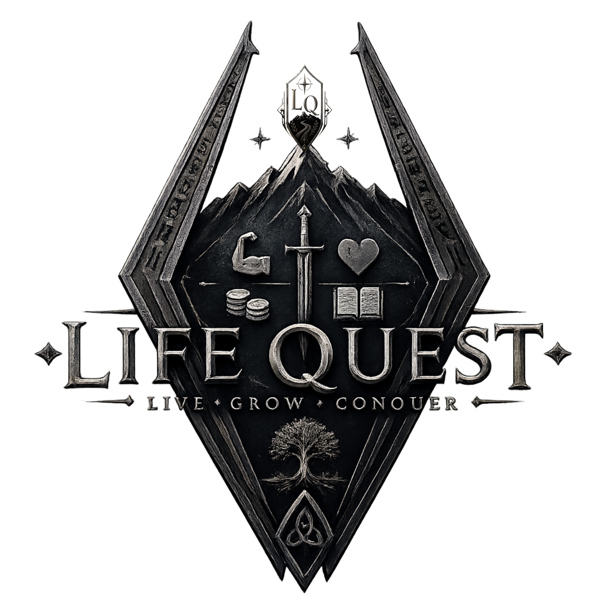

Privacy Policy
Your real life belongs to you.
Website email-processing details updated October 29, 2026. App privacy information effective October 10, 2026.
Who this covers
Life Quest is provided by Simic Solutions Inc. This policy covers the Life Quest iOS app and the website at lifequestapp.ca. The app and website handle information differently.
Information in the iOS app
The current app stores information you enter, including quests, inventory and Coin chest details, journal entries, onboarding and Player details, health or emergency notes you choose to add, and saved places. These records are kept in the app's private storage on your device. The current app has no account system, advertising SDK, or in-app analytics, and does not send your Life Quest records to a Simic Solutions server.
The Places map can request location access. If you allow it, your location can be used to show where you are and record explored areas on your device. You can refuse or change location access in iOS Settings. Map content is provided using Apple Maps, which may process map-related requests under Apple's privacy policy.
Your operating system may include app data in device backups according to your Apple settings. Simic Solutions does not operate those backups.
Information on the website
If you choose to join the email list, Netlify Forms processes your email address and your consent selection for Life Quest development, launch, and promotional updates from Simic Solutions Inc. Joining is optional and is not required to use the app.
We use Brevo to store signup source, submission time and consent wording version, and to deliver the welcome email and Life Quest updates you requested. Netlify and Brevo may process information outside Canada. You can unsubscribe using the link in any promotional email. We retain suppression information to respect that choice and do not automatically resubscribe an unsubscribed address.
The website uses Metricool to understand visits and improve the site. It may process technical information about your browser and visit and may use cookies or similar technologies. Your browser settings or privacy tools may limit this tracking. Links to social platforms or other websites are governed by those services' own policies.
Your choices
You can erase Life Quest's local records from the app's Settings screen. This is permanent within the app. You can manage location access in iOS Settings. If you joined the email list, you can withdraw consent by contacting us or using the unsubscribe option in an email. You can also ask us to remove your email-list record.
We retain email-list information while you remain subscribed or until we process a deletion request. Website analytics and form submissions are processed through their service providers. We will update this policy if the app's or website's data practices materially change.
Contact
For privacy questions or requests, contact Simic Solutions Inc. at info@lifequestapp.ca. For help using the app, visit Life Quest Support.